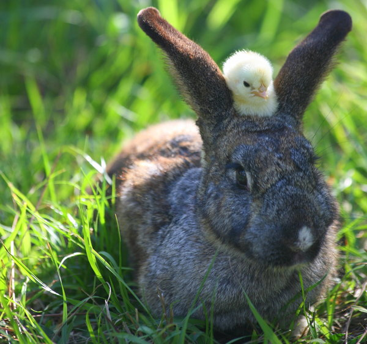

Často se uvádí, že králíci vlivem domestikace ztratili schopnosti svých předků, které jsou pro králíky žijící volně v přírodě nezbytné, a tak králíci, kteří unikli ze zajetí, často padnou za oběť nějakému dravému zvířeti. V mnoha případech tomu bohužel tak opravdu je. Nicméně i králíci domácí mají dodnes spoustu společných vlastností s králíky divokými. A tak ne všichni domácí králíci, kteří se dostanou na svobodu, musí nutně zahynout.
Pokud se králík domácí dostane ze zajetí zpět do přírody a na blízku je kolonie divokých králíků, má poměrně velké šance na přežití. I takový králík se může snadno začlenit mezi obyvatele blízké kolonie, jsou známy spousty případů. Co je však na tom to nejzajímavější, je to, že jeho potomci pak v průběhu několika generací ztratí veškeré znaky domestikace. Přizpůsobí se jejich velikost a získají zpět ochranné zbarvení, které jim umožní lépe přežít ve volné přírodě plné nejrůznějších nepřátel. Domestikace králíků divokých na domácí je tedy vlastně i po stovkách let návratná.
